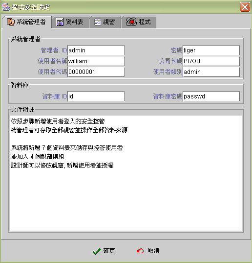
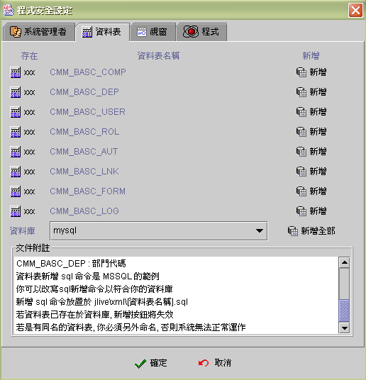
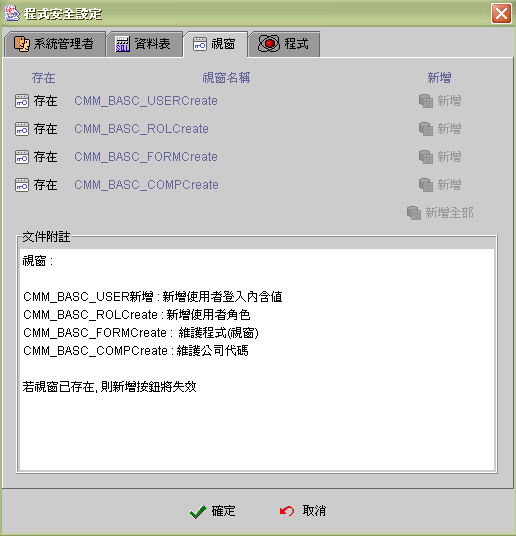
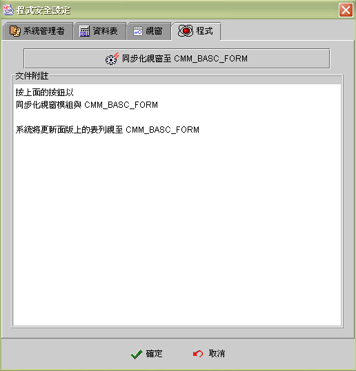

|

8.4
授權式安全控管 (authorized security
control)
啟動
jLIVE Builde™ 的授權式安全控管機制 (start authorized
security control)
授權式安全控管系統內部作業流程
(security internal system flow)
jLIVE™
middle ware
回覆之授權資料資料(authorized data)
視窗授權項目(authorized
item)
授權項目對元件的控制
(authorized item and components)
視窗授權項目之動態變更(authorized
item dynamic change)
授權程式設計建議
(tips of authorized programming)
授權式安全控管設定作業
(authorized security control setting)
內嵌組態設定檔
(securitysql.xml)
jLIVE Builder™ 授權式安全控管機制 (authorized
security control)，是個選擇性 (option)
的系統功能，應用程式系統規劃師可以決定是否採取 jLIVE Builder™
的機制，或自行建立安全控管模組。自行管理的方式，只要將應用程式屬性設定頁的【使用
jLIVE 登入機制】取消，應用程式執行時，系統的使用者登入對話視窗就不會出現，設計師必須提供登入對話視窗，並對登入的使用者作檢核及授權使用視窗功能。
使用 jLIVE Builder™ 的授權式安全控管機制，必須將應用程式屬性設定頁的【使用
jLIVE 登入機制】核選 (checked)，並在製作應用程式時，執行授權式安全控管設定。完成上述動作後，系統會自動新增八個資料表
(tables)，加入四個控制視窗 (forms)，並將控管(security control)
設定的 XML 檔傳送至 jLIVE™ middle ware。其中八個資料表
(tables) 記錄使用者登入名稱 (name)、密碼 (password)、任務角色
(roles) 及視窗授權項目 (authorized items)，四個控制視窗 (form)
提供執行期的應用程式授權，設計師可以直接引用或按需求進一步的更改。
使用 jLIVE Builder™
的授權式安全控管機制，資料庫的登入連結資料 (database login
id、password)
是儲存於資料庫相關的資料表中，經由使用者登入 jLIVE™
middle ware 驗證許可後，再取得相對的資料庫登入資料(login)。應用程式系統規劃師，可以針對不同作業使用者，給予特定的登入連結資料
(id、password) 及資料庫存取權限，加強資料庫存取連結的安全性。
啟動 jLIVE Builde™ 的授權式安全控管機制
(start
authorized security control)
-
核選 (checked)
應用程式屬性設定頁的【使用
jLIVE 登入機制】。
-
展開 (expand)
控制面版應用程式節點，選擇 Applet 或 JarRun 屬性設定頁，按下圖示 安全
按鍵，開啟安全控管設定 (security setting) 作業。
-
設定應用程式管理者資料。
-
依資料庫系統
(database system)，建立相關控制資料表 (tables)。
-
建立管理授權的相關模組視窗
(forms)。
-
同步應用程式視窗至管理資料表。
-
傳送管理者及相關資料庫連結資料的
XML 檔至 jLIVE™ middle ware。
當應用程式佈建執行後，應用程式視窗有所新增或刪除時，必須再次執行應用程式視窗至管理資料表的同步作業。如此授權管理作業中的視窗列示，才能顯示正確的資訊。而相關視窗的程式碼更新，請執行應用程式線上更新
(application online
update) 作業。
▲Top
授權式安全控管系統內部作業流程
(internal system flow)
- 客戶端 (client) 以瀏覽器登入應用程式，系統出現輸入使用者名稱、密碼的對話視窗。
- 使用者輸入的名稱 (name) 、密碼 (password) 傳送至 jLIVE ™middle
ware 驗證。
- jLIVE™
middle ware 根據名稱、密碼，查詢是否存在於使用者資料表
(CMM_BASC_USER)中。
- 如果不存在，
jLIVE™ middle ware
傳回使用者名稱、密碼錯誤訊息。
-
根據使用者資料表 (CMM_BASC_USER)
的 USER_EXCL 及已登入的使用者列表，檢查該名稱、密碼是否允許同時多人登入及是否已有該名稱、密碼登入之使用者，如果該使用者已存在且不允許同時多人登入，則
jLIVE™ middle ware
傳回使用者名稱、密碼已登入訊息。
-
合格使用者，根據使用者資料表
(CMM_BASC_USER) 的 USER_KEY 與授權角色連結表 (CMM_BASC_LNK) 、角色授權表
(CMM_BASC_AUT) ，查詢使用者授權資料 (authorized
data)。
- 根據使用者資料表 (CMM_BASC_USER) 的 DB_NAME
及 DB_PASS 建立資料庫連結 (database connection)。
- 傳回驗證成功及使用者授權資料 (authorized
data)。
- 客戶端 (client) 系統將根據授權資料(authorized
data)，將未授權的操作項目、選單、按鍵使之失效 (disabled)。
▲Top
jLIVE™ middle ware
回覆之授權資料資料 (authorized data)
- 使用者資料表 (CMM_BASC_USER) 的欄位(data field) 內含值：
- 欄位 COMP_CODE 內含值儲存於 SysHash，鍵值
(key) 為 compcode。
- 欄位 USER_NAME 內含值儲存於 SysHash，鍵值
(key) 為 username。
- 欄位 USER_CODE 內含值儲存於 SysHash，鍵值
(key) 為 usercode。
- 欄位 USER_DUTY 內含值儲存於 SysHash，鍵值
(key) 為 userduty。
- jLIVE™ middle ware Session ID ：儲存於 SysHash，鍵值
(key) 為 sessionid。
- 使用者登入的使用者名稱：儲存於 SysHash，鍵值
(key) 為 userid。
- 使用者登入的使用者密碼：儲存於 SysHash，鍵值
(key) 為 userpass。
-
視窗及視窗授權項目(authorized item) 列表：jLIVE™
middle ware 以下列 SQL
擷取使用者的視窗及視窗授權項目，再經聯集 (union)
視窗授權項目後傳回，回傳視窗及視窗授權項目儲存於
SysHash，鍵值 (key) 為視窗名稱 (form
name)，值 (value) 為授權項目(authorized item)。
Select B.FORM_NAME, B.FORM_SPC, B.AUT_TYPE
From CMM_BASC_LNK A , CMM_BASC_AUT B
Where A.USER_KEY = [CMM_BASC_USER.USER_KEY]
And A.ROL_KEY = B.ROL_KEY
▲Top
視窗授權項目 (authorized item)
- I ：允許使用者在該視窗中，操作屬於新增
(insert) 檔案記錄的功能。
- U：允許使用者在該視窗中，操作屬於修改
(update) 檔案記錄的功能。
- D：允許使用者在該視窗中，操作屬於刪除
(delete) 檔案記錄的功能。
- Q：允許使用者在該視窗中，操作屬於查詢
(query) 檔案記錄的功能。
- P：允許使用者在該視窗中，操作屬於列印作業
(print) 的功能。
- X：設計師自行定義項目(custom
item) 。
- Y：設計師自行定義項目(custom
item) 。
- Z：設計師自行定義項目(custom
item) 。
▲Top
授權項目對元件的控制
(authorized item and components control)
jLIVE
Builder™ 應用程式執行時，相關的元件 (components) 及事件
(events) 會自行反應使用者是否被授權，沒有相對的授權項目
(authorized item) 時，視窗開啟後，元件會自行失效 (disabled)
，功能選單及項目(menu and menu item) 會移除 (removed)。
-
事件 (event)
-
開啟視窗
(open form) ：授權資料中，須含有該視窗名稱 (form name)。
-
資料來源瀏灠事件
(data source navigator)
-
新增
(insert)：具有 I 授權項目。
-
編輯
(update)：具有 U 授權項目。
-
刪除
(delete)：具有 D 授權項目。
-
查詢資料來源
(query data source) ：具有 Q 授權項目。
-
執行印表作業
(open report) ：具有 P 授權項目。
-
元件 (component)
-
功能選單
(menu item) ：連結的啟動事件具有相關授權項目。
-
導覽元件
(Navigator component)
-
新增按鈕
(insert)：具有 I 授權項目。
-
編輯按鈕
(update)：具有 U 授權項目。
-
刪除按鈕
(delete)：具有 D 授權項目。
-
查詢按鈕
(query)：具有 Q 授權項目。
-
按鈕元件
(Button component)：連結的啟動事件具有相關授權項目。
-
資料表元件
(Grid component)：I、U、D
授權項目，各會影響資料表的新增 (insert) 編輯 (update) 刪除
(delete) 的操作許可。
-
圖片引發器
(image invoker)：連結的啟動事件具有相關授權項目。
▲Top
視窗授權項目之動態變更
(authorized
item dynamic change)
jLIVE™
Builder 視窗授權項目，是以鍵值 -- 視窗名稱 (key -- form name) 與值 -- 授權項目字串
(value -- authorized item
string) 的型式存在於 SysHash 中，設計師可以用運算公式
(formula) 的 SysHashGet(FormName())
查詢授權項目字串，如果授權項目字串中含有該授權項目即是允許該授權操作；設計師亦可根據需要，利用運算公式
(formula) 的 SysHashPut(FormName(),"IUDPQ")，更動預設的授權項目
("IUDPQXYZ")。
▲Top
授權程式設計建議
(tips of authorized programming)
-
jLIVE™
Builder 內建的八個資料表 (tables)，其中資料表名稱及已存在的欄位名稱不可更改，但可以加入其它欄位。建議應用程式規劃時，能以這些資料表
(tables) 涵蓋或擴充為，人員、公司、部門等基本資料檔。
-
設計師在應用系統流程中，可以利用運算公式
(formula) 的 SysHashGet()，取得由 jLIVE™ middle ware
所傳回的使用者資料：公司代碼 (compcode)、使用者名稱(username)、使用者代碼(usercode)、使用者職責 (userduty) 以及由客戶端登入時的
ID (userid)、密碼 (userpass) 和由 jLIVE™ middle ware 所建立的
Session ID (sessionid)。其中可以公司代碼
(compcode)
關連隸屬的公司資料，運用於多公司系統；使用者代碼 (usercode) 可以關連使用者的基本資料；使用者職責 (userduty)
則應用於使用層級的流程規畫。
-
由於各個資料庫系統的資料欄位型別與索引不儘相同，設計師可以按存取需求，自行加入所需的索引，以加快查詢效率。
-
jLIVE™
Builder 內建的四個視窗，設計師在了解設計內容後，可以自行修改或重新設計。jLIVE™
在內嵌視窗時，會按內嵌組態設定檔 (securitysql.xml)
的指示，選擇不同組的作業視窗，其中的差異在於資料庫系統是否有提供
AUTOINCREASE 的資料欄位型別。
-
使用者資料表
(CMM_BASC_USER)，中的 USER_EXCL 欄位，其值為 1 時，一個 USER_ID、USER_PASS 線上
(on line)
只允許登入一個使用者，第二個以相同 USER_ID、USER_PASS
登入時將無法進入。
-
使用者資料表
(CMM_BASC_USER)，中的 DB_NAME 和 DB_PASS
欄位，為該使用者登入資料庫所使用的 ID 和 密碼 (password)。
-
視窗資料表 (CMM_BASC_FORM)，中的
FORM_NAME 欄位，是視窗 class 的名稱； FORM_DIR 欄位，是jLIVE
Builder™ 視窗節點的分類 (catalog)
屬性值；FORM_DESC 欄位，是視窗節點的註解值。
-
使用者登入記錄資料表
(CMM_BASC_LOG)，LOG_STAT 欄位，其值 i
表示在線上 (on line) ；o 表示已離線 ；k
表示不正常離線。設計師可查詢使用者登入記錄資料表
(CMM_BASC_LOG)，顯示線上狀態。
▲Top
授權式安全控管設定作業
(authorized security control setting)
按下圖示 安全
，開啟作業視窗。
-
應用程式系統管理者：
-
管理者 ID：應用程式系統管理者
ID，應用系統線上更新需要此 ID
及密碼。
-
密碼：應用程式系統管理者密碼。
-
使用者名稱：管理者名稱。以應用程式系統管理者登入時
SysHash 中，
username 的值。
-
公司代碼：所屬公司代碼。以應用程式系統管理者登入時
SysHash 中，
compcode 的值。
-
使用者代碼：使用者代碼。以應用程式系統管理者登入時
SysHash 中，
usercode 的值。
-
使用者類別：使用者類別。以應用程式系統管理者登入時
SysHash 中，
userduty 的值。
-
資料庫 ID：應用程式系統管理者登入資料庫的 ID。
-
資料庫密碼：應用程式系統管理者登入資料庫的密碼。

CREATE TABLE CMM_BASC_LNK (
USER_KEY int NOT NULL,
ROL_KEY int NOT NULL)
-
CMM_BASC_ROL：角色資料表。
CREATE TABLE CMM_BASC_ROL (
ROL_KEY int IDENTITY (1, 1) NOT NULL,
ROL_NAME varchar (32) NULL,
ROL_DESC varchar (254) NULL)
-
CMM_BASC_AUT：角色視窗授權表。
CREATE TABLE CMM_BASC_AUT (
ROL_KEY int NOT NULL,
FORM_NAME varchar (64) NOT NULL,
FORM_SPC varchar (10) NULL,
AUT_TYPE varchar (1) NULL)
-
CMM_BASC_FORM：視窗資料表 。
CREATE TABLE CMM_BASC_FORM (
FORM_NAME varchar (64) NOT NULL,
FORM_DIR varchar (32) NULL,
FORM_DESC varchar (254) NULL)
-
CMM_BASC_COMP：公司代碼資料表。
CREATE TABLE CMM_BASC_COMP (
COMP_CODE varchar (4) NOT NULL,
COMP_NAME varchar (32) NULL,
COMP_DESC varchar (254) NULL,
COMP_ID varchar (10) NULL,
COMP_TYPE varchar (4) NULL)
-
CMM_BASC_DEP：部門代碼資料表。
CREATE TABLE CMM_BASC_DEP (
COMP_CODE varchar (4) NOT NULL,
DEP_CODE varchar (10) NOT NULL,
DEP_NAME varchar (32) NULL,
LOCA_CODE varchar (6) NULL)
- CMM_BASC_LOG：使用者登入記錄資料表。
CREATE TABLE CMM_BASC_LOG(
SESSION_ID varchar(20) NOT NULL,
USER_KEY int NOT NULL,
AP_NAME varchar(32) NULL,
LOG_IN datetime NULL,
LOG_OUT datetime NULL,
LOG_STAT varchar(1) NULL,
REM_HOST varchar(32) NULL,
REM_IP varchar(32) NULL,
REM_NAME varchar(32) NULL,
LOCA_HOST varchar(32) NULL,
LOCA_IP varchar(32) NULL,
LOCA_NAME varchar(32) NULL)

-
視窗 (form)：建立授權管理視窗模組
-
CMM_BASC_USERCreate：使用者管理視窗。
-
CMM_BASC_ROLCreate：角色管理視窗。
-
CMM_BASC_FORMCreate：應用程式視窗管理。
-
CMM_BASC_COMPCreate：公司代碼管理視窗。
若視窗已存在, 則新增按鈕將失效。


▲Top
內嵌組態設定檔
(securitysql.xml)
securitysql.xml 位於
jLIVE Builder™ 安裝目錄下的 XML 目錄中，是內嵌 (plug in) 資料表
(tables) 及視窗(forms) 的設定檔。設計師必須完全了解
XML 修改方式，及對要修正或新增的 SQL
，已在資料庫中測試無誤，才可進行更動。通常只有在下列情況下才需做更動。
-
所使用的資料庫不在選項中：
在 <config><sql>
標籤 (Tag) 下新增一整組的建立資料表 (tables) 標籤 (tag)，可以複製已存在的
MSSQL 或ORACLE 再進行修改。設計師必須對每一個資料表
(table)
的 SQL 命令按所使用的資料庫 (database system)
正確的定義。而在資料庫標籤 (tag) 中有一
特別的屬性 --
specform ，若使用的資料庫具有 AUTOINCREASE
欄位型別，則設定為空字串，否則設定為 oracle，這是因為
jLIVE Builder™ 根據 AUTOINCREASE
欄位型別的有無，提供二種不同的操作視窗。
-
更改內嵌資料表的
SQL 命令：
對要修正或新增的
SQL ，必須先在資料庫中測試無誤，才可進行更動。
-
以自行修改或開發的視窗取代原有模組：
jLIVE Builder™
在內嵌四個視窗 (forms) 時，是根據四個視窗名稱(CMM_BASC_USERCreate.xml+"."+
specform、
CMM_BASC_ROLCreate.xml+"."+specform、CMM_BASC_FORMCreate.xml+"."+specform、CMM_BASC_COMPCreate.xml+"."+specform)，如果
specform 屬性是空字串則前面不加
"."。如果設計師要以自行開發的視窗取代，必須先更名為上述的視窗名稱，再加上
"." 與一個特殊字串，並把此字串填入 specform
的屬性中，請參考 Oracle 的作法。
▲Top
Copyright © 2001~
2004 Probe Technology . All Rights Reserved.
Questions, comments,
and suggestions to Service@probe.com.tw
|